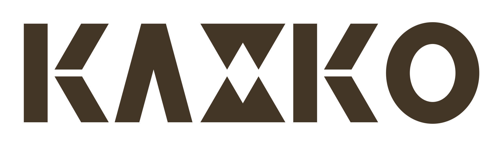

Adaptabilidad total
Combina capa exterior impermeable (20.000 mm), forro térmico ultraligero y chaleco cortavientos en una única prenda modulable mediante cremalleras selladas.

Adaptabilidad instantánea frente a los cambios bruscos de meteorología en alta y media montaña. Diseñada en el País Vasco para que nunca tengas que detener tu marcha.
Objetivo: 50.000 €
Recaudado: 30.000 € de un objetivo de 50.000 € (60% completado).
Mecenas actuales: 215 montañeros y montañeras apoyando el lanzamiento.
Tiempo restante: 18 días para el cierre de campaña.
Apoya el proyectoCombina capa exterior impermeable (20.000 mm), forro térmico ultraligero y chaleco cortavientos en una única prenda modulable mediante cremalleras selladas.
Fabricada al 100% con poliamida reciclada de redes de pesca y membranas libres de PFC.
Si se rompe en la montaña, lo reparamos en nuestro taller sin coste para evitar residuos textiles.